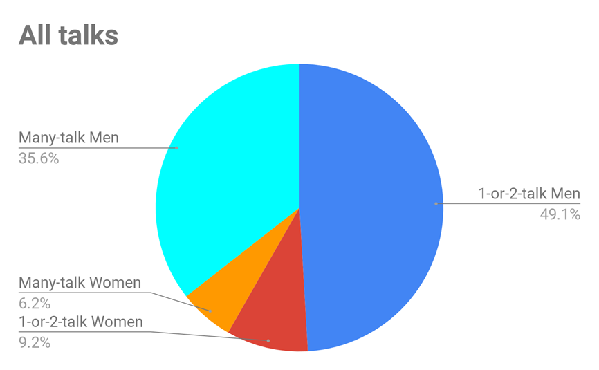

Small numbers of speakers give disproportionately large numbers of talks: Analysis Details
This page presents details that support our analysis that a problematically small number of speakers are asked to give conference talks too frequently with respect to other potential speakers in the field. This and other concerns are based on an analysis of conference speaker
statistics in the field of Relativisitic Heavy Ion physics. It is
based on speakers listed on public websites from most major
conferences in this field between 2011 and 2019.
The analysis
was performed by members of the RHIC/AGS
UEC and others. For more information please
contact the authors at rhic_conference_stats_analysis_team@gmail.com.
Disproportionately Large Numbers of Talks Given by Small Numbers
of Speakers
A small fraction of speakers are responsible for a disproportionate
number of talks. This is particularly dominant among female
theorists. Pie Chart:
About 40% of talks are given by people with 3 or more talks.

|

|
-In the data anlaysis that follows we use as a reference the
following expectations for the percent of femaile
theorists, Theorists: 12.4% female Experimentalists:
20.3% female… this is based on XXX, YYY
This part can also reference Lab data?
Conclusions
Based on these results....
Email to rhic_uec@gmail.com.